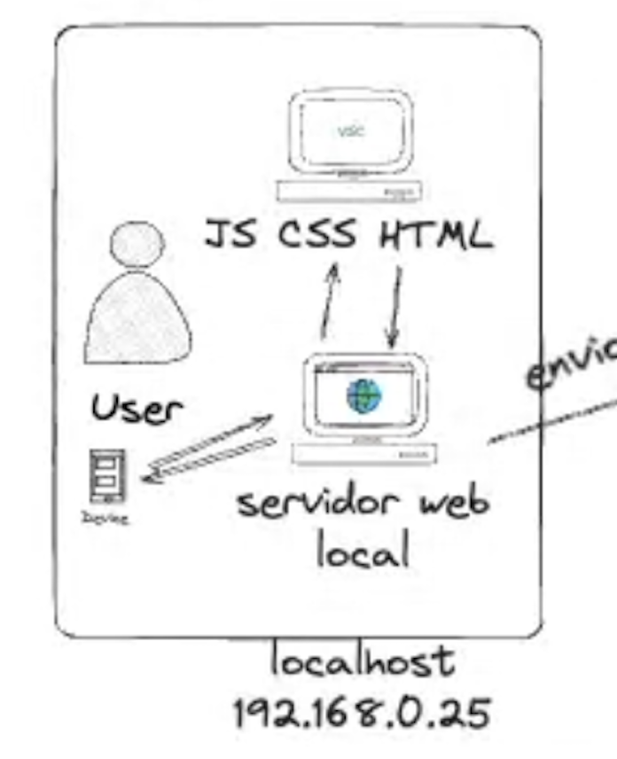
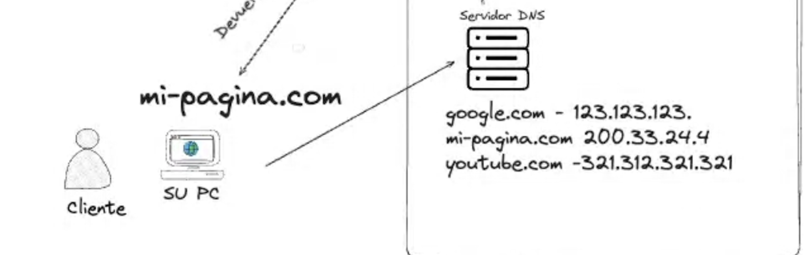

Paso 1
Crear Sitio Web:
Conocé el proceso que tiene que realizar un diseñador para poder hacer su página.
Paso 2
Publicar tu web en internet:
Ahora mira el paso a paso que tiene que seguir un diseñador web para subir su página web antes creada y se pueda ver en internet.

Paso 3
Como se puede ver desde cualquier computador:
Por último, es el paso a paso de como un usuario cualquiera entra desde su dispositivo electronico, busca en internet y encuentra el sitio web que creamos y subimos a internet.